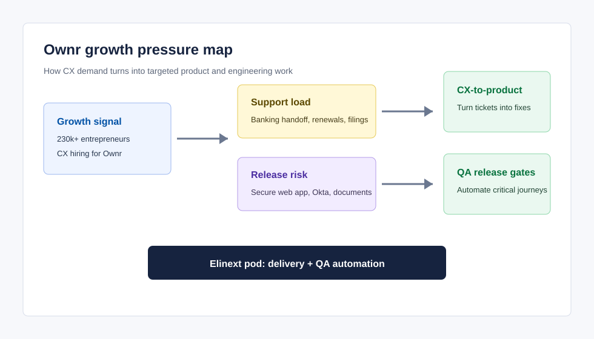

Banking handoff clarity
Public reviews and Reddit threads point to confusion around RBC bank-account requirements, refunds, cancellation, and what users can skip or do themselves.
RBCx is growing a high-trust web platform for Canadian entrepreneurs. The current Ownr CX hiring signal suggests a practical product moment: reduce avoidable support friction, protect the secure registration journey, and convert customer feedback into shipped fixes.
The strongest opportunity is a focused delivery pod that turns repeated support signals into product improvements while adding QA gates around registration, banking, documents, and account-state transitions.
Public reviews and Reddit threads point to confusion around RBC bank-account requirements, refunds, cancellation, and what users can skip or do themselves.
Users ask what happens after incorporation: annual returns, minute books, renewals, and ongoing admin. That is a product education and support-deflection opportunity.
Ownr's secure app uses multiple stateful handoffs. Journeys should be tested end to end across province, entity, payment, banking, and document states.

Start with a tight diagnostic, then move into sprint delivery. The goal is measurable support reduction and higher confidence in critical customer journeys.
Map ticket themes, Trustpilot/Reddit pain signals, help-center gaps, and real app routing paths into a prioritized engineering backlog. Output: journey map, risk register, test plan, and first sprint scope.
Deploy 3-6 engineers under RBCx direction to improve onboarding states, RBC account status handling, plan-tier messaging, document access, and post-incorporation guidance.
Create Playwright regression gates for public entry points, Okta handoff, account creation, payment/discount logic, document retrieval, support escalation, and province/entity variants.
Elinext is a full-cycle software development provider operating since 1997. For RBCx, the relevant model is a dedicated pod working inside your product, security, and release process.
These are real Elinext case studies from the local case-study corpus, selected for financial services, document-heavy workflows, secure web applications, and modernization work.
Elinext built a financial-services web app for document review, indexing, categorization, and remediation. The delivered application helped increase lawyers' productivity and simplified workflow.
Open case studyA 4 full-stack developer plus QA team supported modernization of a financial management and accounting platform that lacked functionality users expected from competing products.
Open case studyA practical first conversation: choose the journey causing the most support load today, then review the current flow, existing tests, data events, and backlog blockers. From there, Elinext can scope a short diagnostic or a first 6-8 week delivery pod.